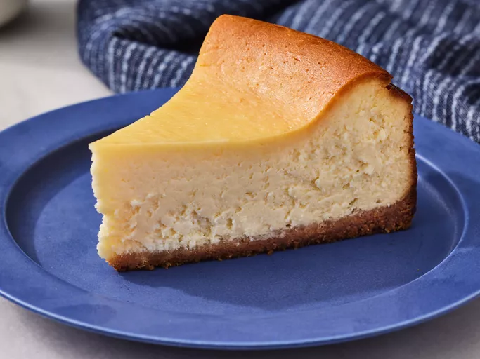

Home
Cheesecake

Description
A delicious cheesecake recipe to indulge in!
Prep Time: 30 mins // Cook Time: 1 hour
Additional Time 6 hours // Total Time: 7 hours 30 mins
Makes 12 servings (9-inch cheesecake)
Ingredients
- 15 graham crackers, crushed
- 2 tablespoons butter, melted
- 4 (8 ounce) packages cream cheese
- 1 1/2 cups white sugar
- 3/4 cup milk
- 4 large eggs
- 1 cup sour cream
- 1/4 cup all-purpose flour
- 1 tablespoon vanilla extract
Steps
- Preheat the oven to 350 degrees F (175 degrees C). Grease a 9-inch springform pan.
- Mix graham cracker crumbs and melted butter together in a medium bowl until well combined.
- Press onto the bottom of the prepared pan to make a packed crust.
- Mix cream cheese and sugar together in a large bowl until smooth. Blend in milk, then mix in eggs, one at a time, until just combined.
- Add sour cream, flour, and vanilla; mix until smooth.
- Pour filling onto prepared crust. Bake in the preheated oven for 1 hour.
- Turn the oven off; let cheesecake cool in the oven with the door closed for 5 to 6 hours to prevent cracking. Chill in the refrigerator until serving.